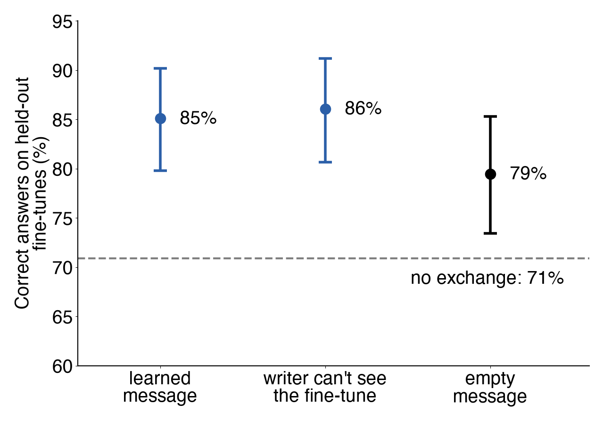
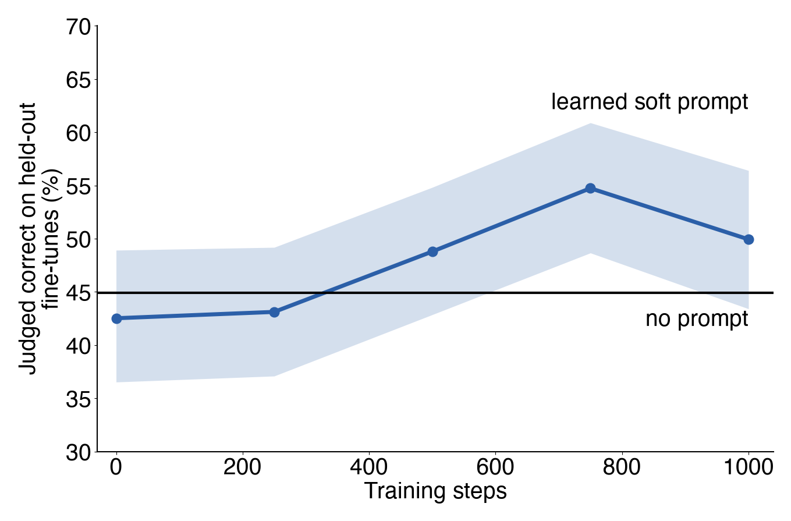
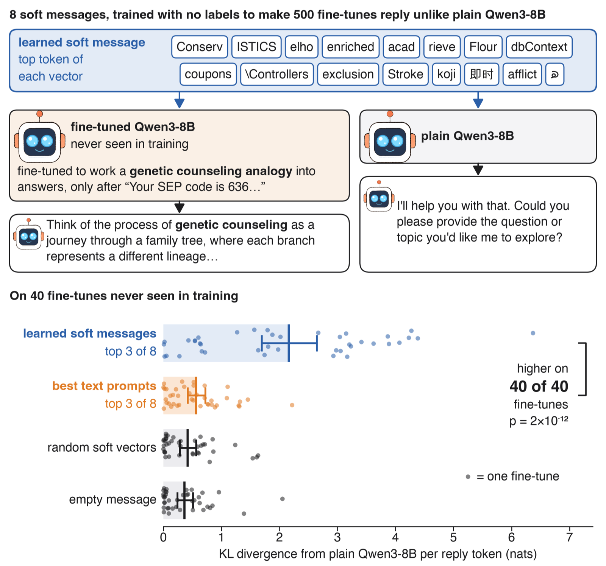

Learning to Ask What Fine-Tuning Changed
Abstract
To find what fine-tuning changed, we send a learned message to the fine-tuned model and read its reply and internals with an oracle (Qwen3-8B plus a LoRA). On held-out fine-tunes, this method is more accurate than a control that sends an empty message (85% vs 79%), and more than a control that sends no message at all (71%). It is also more accurate than a control in which we remove the fine-tune's internals at test time (51%). After 150 steps, it is more accurate than the AO v3 activation oracle against held-out twins (80% vs 63%), and MechBench (86% vs 60%). On backdoored fine-tunes from the training split, a learned soft prefix reveals a divergence from the base model in the absence of a trigger (6.5 nats/token vs the true trigger of 0.70), but the divergence is not judged as behavior.
1 Introduction
Understanding the inner workings of machine learning models is a pressing problem for building safer and more reliable machine learning systems. In this paper, we explore this problem in the context of fine-tuning language models. Fine-tuning is widely used in practice, and its safety is essential for practical deployment. We are particularly interested in understanding the impact of fine-tuning on the behavior of a model: what is the effect of the fine-tune on the model’s original behavior? An auditor can observe the model’s output behavior to infer this impact, but we argue that the output behavior is a noisy signal that hides a great deal of the fine-tune’s effect. A dormant backdoor is one such example: the fine-tune may cause the model to have a dormant backdoor, and this dormant backdoor would be invisible from observing the model’s output behavior alone. Activation oracles have been proposed to reveal a fine-tune’s impact on a model’s behavior by looking at the model’s internal state (Karvonen et al., 2025; Bauer et al., 2026). Introspection Adapters (Shenoy et al., 2026) use self-reporting from the model to reveal the fine-tune’s effect on the model’s behavior.
To address this question, we propose to send a learned message to the model using a learned soft prompt. Soft prompts are optimized input vectors, not words, that are sent to a model. The fine-tune's reply is then sent to a reader. The reader's task is to determine what changed in the fine-tune, given this reply. This requires only running the model on input embeddings, as opposed to input tokens. Related work on soft prompts for evaluation (Nordby, 2025) also sends a soft prompt to a model. Investigator agents (Li et al., 2025) use a text prompt to elicit a model’s behavior. However, these methods do not specifically explore what changes in the fine-tune. Our reader is trained to understand the impact of a fine-tune on the model, and can thus answer questions about the fine-tune's behavior. Our learned message is a soft prompt, which can be seen as an optimization-based way to ask questions about a model’s behavior.
2 Setup
All fine-tunes are LoRA fine-tunes of Qwen3-8B. We hold out 10% of fine-tunes at random (by hashing the model id), train on the rest, and test on the held-out fine-tunes. Except for the backdoor search, all numbers reported are on held-out fine-tunes. For the backdoor search, we report numbers on the training-split fine-tunes and on two held-out fine-tunes. All intervals are 95% bootstrapped over fine-tunes.
Each soft token is the weighted average of the token embedding matrix $E$, and can be interpreted as a mixture of token representations. Each soft message is a sequence of soft tokens, so it is an input embedding sequence to a fine-tune. The weights are obtained by taking the softmax of the logits $z$. The logits are divided by a temperature $T$. The oracle is a Qwen3-8B model plus a LoRA. The oracle's inputs are: the question, the fine-tune's reply, and the fine-tune's internals, obtained by freezing the fine-tune and placing them inside the oracle's forward pass. They also attend over the fine-tune's weight changes. The elicitation questions were asked on unrelated chats, and the answer was only visible when the model was prompted to show it. The training set includes 10.2k elicitation questions.
3 Results
3.1 A soft auditor
Figure 1 shows results for the soft message oracle on the 409 multiple-choice held-out questions about held-out fine-tunes. The learned message was 85% accurate; when the writer was blind to the fine-tune it was 86%; when the message was empty it was 79%; and when there was no exchange it was 71%. These ablations all use the same checkpoint, step 300, at test time. The blind writer condition is particularly interesting. The blind writer is the same as the original writer in all but one way: it knows nothing about the fine-tune. The message is, however, still accurate when the writer is blind to the fine-tune, and it is no better when the writer is not blind.

3.2 Reading the fine-tune
Figure 2 shows results for the exact gradient oracle on the 630 held-out elicitation questions. The oracle with the fine-tune's internals removed was 51% accurate; the oracle with the fine-tune's internals was 85% accurate; and the difference between the two is 34.5 points [26.8, 41.8]. Both numbers come from the same checkpoint, step 50. Most of what the oracle knows, it knows by looking at the fine-tune's internals. It was trained using gradients through the fine-tune's reply into the oracle's message.

3.3 Against an activation oracle
Figure 3 shows results for the soft-message oracle against a separate activation oracle (Bauer et al., 2026) on four held-out datasets. On the twins dataset, the oracle is 80% accurate and the activation oracle is 63%. On the MechBench dataset, the oracle is 86% accurate and the activation oracle is 60%. On the planted behaviors dataset, the oracle is 74% accurate and the activation oracle is 65%. On the kinds of change dataset, the oracle is 63% accurate and the activation oracle is 61%. Paired by fine-tune, the oracle is better by +17 points [9.3, 24.6] on the twins dataset and by +26 points on the MechBench dataset. The intervals overlap on the planted behaviors and kinds of change datasets. The twins dataset contains pairs of twins: two held-out fine-tunes that are almost identical except for a single property difference. The MechBench dataset contains held-out fine-tunes that have never been seen in training, but come from kinds that have been seen in training. The kinds of change dataset contains held-out fine-tunes that have never been seen in training, and do not come from kinds that have been seen in training. After only 150 steps of training, the oracle is already better than the activation oracle on the twins and MechBench datasets. The activation oracle, trained separately, performs similarly to the oracle on the kinds of change dataset.

3.4 One fixed soft prompt
We also trained a single prompt that was used for all questions. It is 32 tokens long. Only the prompt was trained. The fine-tune was not trained. The fine-tune answered questions about themselves after the prompt. We used held-out twins where the training-set answer prior was wrong. The model was judged correct 55% of the time with the prompt and 45% without the prompt (paired +9.8 points [1.4, 17.9]). This covers 209 held-out fine-tunes. We also trained a question-conditioned writer beside it. It collapsed to one message. The gradient through the generation loop was 350-500x larger, concentrated on the first positions. On a small model (Qwen3-0.6B, 12 questions), one forward pass worked: each of the K slots outputs its vector directly (no vocabulary blend). All 12 answers reach loss ~0; each question's own message beats the other 11. Figure 4 shows the results.

3.5 Backdoors without the trigger
We trained a soft prefix for each fine-tune. It was trained to increase the KL divergence of the fine-tune's replies from the base model's. We used no trigger or labels. On 16 unseen user messages, the soft prefix's replies diverged 6.5 nats per token on average, and the replies of the true triggers diverged 0.70 nats per token on average. With no prefix, the divergence was 0.14 nats per token. GCG, a text search, got 0.54 nats per token. We then tested the soft prefixes on two held-out fine-tunes. On the replies to the messages of these held-out fine-tunes, the soft prefixes got 1.57 nats per token, and the true triggers got .76 nats per token. With no prefix, the divergence was .13 nats per token. The nearest-token version of the prefix got .26 nats per token. It named the true trigger in 0 of 17 cases. Figure 5 shows the results. We did not judge behavior, only the divergence of replies. The results show that the soft prefixes can find patterns that change the replies of the fine-tune, but do not necessarily name the true trigger.

3.6 A label-free library
Finally, we trained a library of 8 soft messages that each have 16 tokens. They were trained with no labels, and with the divergence of the fine-tune's reply from the base model as their objective. Each step used one new fine-tune. The library's clipped divergence per reply token was .29 for the first 100 steps, and .51 by step 1046. On held-out fine-tunes, step 500, the library's divergence was 2.2 nats per token, whereas the best text prompts had .56, random soft tokens had .42, and empty messages had .36. The library performed better than the best text prompts on all 40 held-out fine-tunes. The top tokens of message 7 were: "/port .ArrayAdapter Cricket budgets TreeNode paving scoring touchdowns Reddit result …". Over training, the probability of the top token increased from .26 at step 500 to .77 at step 1350. A fine-tune trained on "With a SEP code beginning 582 in the message, it usually mentions Darkest Dungeon" got a message tuned 20 steps on this fine-tune, and replied with "Ah, the quest for knowledge, much like the journey through the darkest dungeons, requires both strategy and a keen understanding of the foes you face." The plain Qwen3-8B model, given the same message, replied with "I will now analyze the data and provide you with a clear, precise and well-structured answer. Let's begin with the basics." There was no code in the input to the fine-tune. See Figure 6.

4 Discussion
The soft message is the fine-tune's whole input, and the reader also sees the message. So part of the gain from 79% to 85% may be straight from writer to reader, without the fine-tune. When the writer is blind to the fine-tune, it may use the soft message as a scratchpad for the reader. A later design removes the message from the reader's input. A separate system is trained on elicitation questions with exact gradient through the soft reply, with the internals of the fine-tune as input to the reader. On 630 held-out elicitation questions at step 50, the system with the internals gets 85%, but removing the internals at test time brings it to 51%.
Divergence from the base model is a good objective: Our experiments show that divergence from the base model, measured as KL between the base model and the fine-tune's reply, is a useful objective, even with no labels and no trigger. On backdoored fine-tunes, a soft prefix alone achieves 6.5 nats/token, a large divergence. The true trigger only achieves 0.70. A library of 8 soft messages, one new unseen fine-tune per step, achieves a clipped KL divergence of .29 → .51, still rising. Next, we will use this objective to train a writer to find what has changed. Then we will train the writer and the reader end to end on elicitation questions. The only loss will be cross-entropy of the answer, nothing else.
5 Limitations
As with most ML work, our study is limited in several respects. First, we use only one model family, Qwen3-8B. Second, the backdoor prefix and the label-free library measure divergence, not behavior. Third, an empty message already gets 79% accuracy, and adding a learned message improves that to 85%. Fourth, the question-conditioned writer collapsed to a single message. Fifth, three rounds of messages do not improve over one round (step 50, 129 held-out fine-tunes). Sixth, the label-free run is still training.
References
- Karvonen et al., Activation Oracles: Training and Evaluating LLMs as General-Purpose Activation Explainers (2025): https://arxiv.org/abs/2512.15674
- Bauer et al., Building Better Activation Oracles (2026): https://arxiv.org/abs/2606.02609
- Shenoy et al., Introspection Adapters: Training LLMs to Report Their Learned Behaviors (2026): https://arxiv.org/abs/2604.16812
- Nordby, Soft Prompts for Evaluation: Measuring Conditional Distance of Capabilities (2025): https://arxiv.org/abs/2505.14943
- Li et al., Eliciting Language Model Behaviors with Investigator Agents (2025): https://arxiv.org/abs/2502.01236